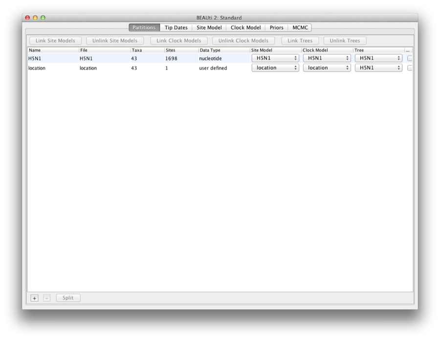
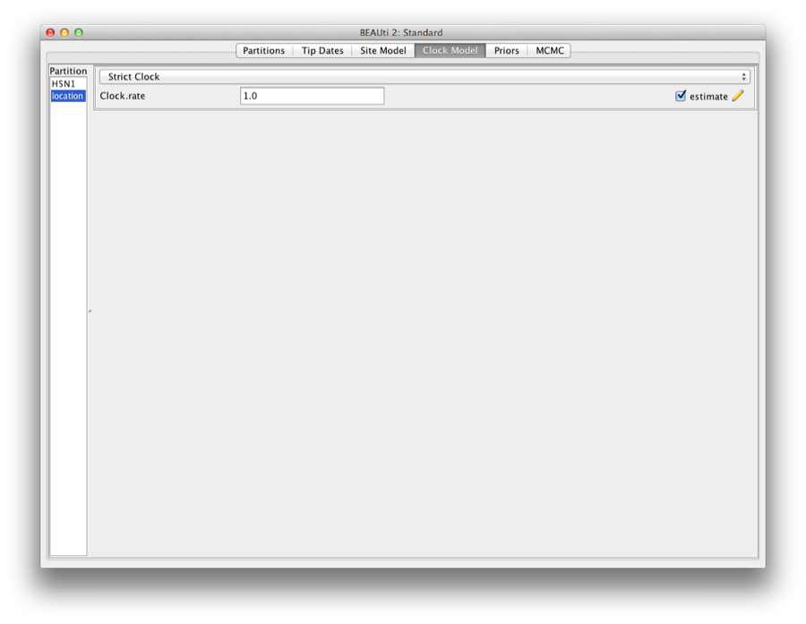

Ancestral Reconstruction/Discrete Phylogeography with BEAST 2.2.xRemco Bouckaert remco@cs.auckland.ac.nz and Walter Xie |
1 Introduction
In this tutorial we describe a full Bayesian framework for phylogeography developed in [Lemey etal., 2009].
You will need the following software at your disposal:
- BEAST - this package contains the BEAST program, BEAUti, TreeAnnotator and other utility programs. This tutorial is written for BEAST v2.2.x, which has support for multiple partitions. It is available for download from
http://www.beast2.org/. - Tracer - this program is used to explore the output of BEAST (and other Bayesian MCMC programs). It graphically and quantitively summarizes the distributions of continuous parameters and provides diagnostic information. At the time of writing, the current version is v1.6. It is available for download from http://beast.bio.ed.ac.uk/.
- FigTree - this is an application for displaying and printing molecular phylogenies, in particular those obtained using BEAST. At the time of writing, the current version is v1.4.2. It is available for download from http://tree.bio.ed.ac.uk/.
- Spread for summarysing the geographic spread in a KML file (available from http://www.kuleuven.ac.be/aidslab/phylogeography/SPREAD.html.
- google-earth for displaying the KML file (just google for it, if you have not already have it installed).
This tutorial guides you through a discrete phylogegraphy analysis of a H5N1 epidemic in South China. The data is a subset of a larger set compiled by [Wallace etal., 2007]. It consists of 43 sequences of 1698 characters.
We go through the following steps:
- The first step is to install the beast-classic package that contains the phylogegraphic models.
- Then, we use BEAUti to set up the analysis, and write it to an XML file.
- We use BEAST to run the MCMC analysis based on the XML file.
- The results will need to be checked for convergence using Tracer.
- Finally, we post-process the output of the MCMC so we can visualise the geographical dispersion.
Set up BEAUti for phylogeography
Phylogeography as described in this tutorial is part of the beast-classic package. If you not already have it installed, you can install the package through BEAUti. Start BEAUti by double clicking on its icon. Select the File/Manage Packages menu. A dialog pops up showing the packages already installed.
Figure 1: Package manager
Select the BEAST-CLASSIC entry in the list, and click the Install button. After a little while the dialog is updated and it shows that the package is now installed. BEAST-CLASSIC requires BEASTlabs, so if you have not already installed BEASTlabs, an error message may be shown warning that BEASTlabs should be installed as well.
Figure 2: Package manager showing packages already installed
Please restart BEAUti after new packages are installed.
BEAUti
Loading the NEXUS file
To load a NEXUS format alignment, simply select the Import Alignment option from the File menu:
Select the file called H5N1.nex, which is located in the place where the beast-classic package is installed under the examples/nexus directory. Typically, packages are installed here:
- for Windows, in your home directory (e.g. c:\Users\joe) under the BEAST directory,
- for Mac, in the Library/Application Support/BEAST directory in your home directory (e.g. /Users/joe),
- for Linux, in the .beast directory in your home directory (e.g /home/joe).
The file contains an alignment of sequences. The H5N1.nex looks like this (content has been truncated):
#NEXUS
BEGIN DATA;
DIMENSIONS NTAX=43 NCHAR=1698;
FORMAT DATATYPE=DNA GAP=- MISSING=?;
MATRIX
A_chicken_Fujian_1042_2005 ATGGAGAAAATAGTGCTTCTTCTT...
A_duck_Fujian_897_2005 ATGGAGAAAATAGTGCTTCTTCTT...
A_duck_Fujian_13_2002 ATGGAGAAAATAGTGCTTCTTCTT...
A_swine_Fujian_F1_2001 ATGGAGAAAATAGTGCTTCTTCTT...
A_Chicken_Guangdong_810_2005 ATGGAGAAAATAGTACTTCTTCTT...
A_goose_Guangdong_2216_2005 ATGGAGAAAATAGTGCTTCTTCTT...
... ...
END;
Figure 3: Add Partition window (Only appear if related packages are installed).
An Add Partition window (Figure 3) would pop up if the related package is installed. Select Add Alignment and click OK to continue.
Once loaded, a partition is displayed in the main panel. You can double click any alignment (partition) to show its detail.
Figure 4: Data partition panel after loading alignment.
Set up dates
We want to use tip dates for this analysis.
Select the ’Tip Dates’ tab, and click the ’Use tip dates’ check box.
Since we can derive the date from the taxon names, click the ’Guess’ button.
A dialog pops up, where we can specify the dates as follows: the dates are encoded after the last underscore in the name. So, we want to use everything after the last underscore, as shown in Figure 5.
Figure 5: Setting up the dates for H5N1
Click OK and the dates are populated by the correct value. Always double check that this happened correctly and no strange outliers or wrong encodings cause any problems, of course.
Setting the substitution model
Select the Site model tab, and change the site model to HKY, and frequency model to ‘empirical’.
Also, set the gamma category count to 4, and check the estimate box on the ’Shape’ parameter that now pops up. The screen should look like this:
Figure 6: Setting the site model
Setting the clock model
We use a strict clock, but to make the analysis converge a bit quicker, we fix the clock rate to 0.004. First, click the menu Mode, and unset ’Automatically set clock rate’. Then, uncheck the estimate flag on the clock rate, and change the rate to 0.004. The screen should look like this:
Figure 7: Setting the clock model
Priors
Change the tree prior from Yule to Coalescent with Constant Population. The other priors are fine. The screen should look like this:
Figure 8: Setting the tree prior
Setting up a discrete trait
Go to the Partitions tab, and click the + button at the bottom of the screen. If the installation of the beast-classic package went OK, a dialog pops up, where you can select what to add (Figure 9).
Figure 9: Add discrete trait
Select ’Add discrete trait’ and click OK. Now you can give a name to the trait, and select a tree to associate the trait with. Here we will use ’location’ (Figure 10).
Figure 10: Naming location trait
Change the name and click OK. Now, a dialog pops up where you can manually add the locations. However, the location is already encoded in the name, so we can ‘guess’ it. Click the Guess button and a dialog pops up where we can choose to define the names by splitting on underscore and select the third group. Before you click OK, the screen should look like Figure 11.
Figure 11: Guess location
After clicking OK, the list is populated by locations, like Figure 12
Figure 12: Locations
You want to double check that all locations are indeed the ones you want, because it is easy for an irregularity to creep into taxon names, and the guess-work may not be correct. Click close, and the data partitions panel has a new partition added for location (Figure 13).

Figure 13: Data partitions panel has a new partition added for location
To get the trait edit dialog back, double click the location partition.
Setting the site model
Click the site model tab, and select the ’location’ on the left. This shows the site model for the trait (Figure 14).
Figure 14: Site model for the trait
Setting the clock model
Click the clock model tab, and select the ’location’ on the left. This shows the strict clock for the trait (Figure 15).

Figure 15: Clock model for the trait
Priors
Click the priors tab, to show the extra priors added for the discrete analysis (Figure 16).
Figure 16: The extra priors added for the discrete analysis
Setting the MCMC options
The next tab, MCMC, provides more general settings to control the length of the MCMC and the file names.
Firstly we have the Length of chain. This is the number of steps the MCMC will make in the chain before finishing. The appropriate length of the chain depends on the size of the data set, the complexity of the model and the accuracy of the answer required. The default value of 10,000,000 is entirely arbitrary and should be adjusted according to the size of your data set. For this data set let’s initially set the chain length to 3,000,000 as this will run reasonably quickly on most modern computers (less than 10 minutes).
The next options specify how often the parameter values in the Markov chain should be displayed on the screen and recorded in the log file. The screen output is simply for monitoring the programs progress so can be set to any value (although if set too small, the sheer quantity of information being displayed on the screen will actually slow the program down). For the log file, the value should be set relative to the total length of the chain. Sampling too often will result in very large files with little extra benefit in terms of the precision of the analysis. Sample too infrequently and the log file will not contain much information about the distributions of the parameters. You probably want to aim to store no more than 10,000 samples so this should be set to no less than chain length / 10,000.
For this exercise we will set the screen log to 10,000, and the file log to 2,000 and tree log to 2,000 (Figure 17). The final two options give the file names of the log files for the sampled parameters and the trees. These will be set to a default based on the name of the imported NEXUS file.
Figure 17: Setting up the MCMC parameters.
If you are using windows then we suggest you add the suffix .txt to both of these (so, H5N1.log.txt and H5N1.trees.txt) so that Windows recognizes these as text files.
Generating the BEAST XML file
We are now ready to create the BEAST XML file. To do this, either select the File/Save or File/Save As option from the File menu. Check the default priors setting and click Continue. Save the file with an appropriate name (we usually end the filename with .xml, i.e., RacRABC.xml). We are now ready to run the file through BEAST.
Running BEAST
Now run BEAST and when it asks for an input file, provide your newly created XML file as input by click Choose File ..., and then click Run (Figure 18).
Figure 18: Launching BEAST.
BEAST will then run until it has finished reporting information to the screen. The actual results files are saved to the disk in the same location as your input file. The output to the screen will look something like this:
BEAST v2.2.0, 2002-2015
Bayesian Evolutionary Analysis Sampling Trees
Designed and developed by
Remco Bouckaert, Alexei J. Drummond, Andrew Rambaut & Marc A. Suchard
Department of Computer Science
University of Auckland
remco@cs.auckland.ac.nz
alexei@cs.auckland.ac.nz
Institute of Evolutionary Biology
University of Edinburgh
a.rambaut@ed.ac.uk
David Geffen School of Medicine
University of California, Los Angeles
msuchard@ucla.edu
Downloads, Help & Resources:
http://beast2.org/
Source code distributed under the GNU Lesser General Public License:
http://github.com/CompEvol/beast2
BEAST developers:
Alex Alekseyenko, Trevor Bedford, Erik Bloomquist, Joseph Heled,
Sebastian Hoehna, Denise Kuehnert, Philippe Lemey, Wai Lok Sibon Li,
Gerton Lunter, Sidney Markowitz, Vladimir Minin, Michael Defoin Platel,
Oliver Pybus, Chieh-Hsi Wu, Walter Xie
Thanks to:
Roald Forsberg, Beth Shapiro and Korbinian Strimmer
File: H5N1.xml seed: 1422413146822 threads: 1
Random number seed: 1422413146822
... ...
2980000 -5980.9740 243.0 -5831.4429 -149.5311 2m22s/Msamples
2990000 -5989.5101 240.6 -5831.7579 -157.7522 2m22s/Msamples
3000000 -5974.5263 243.7 -5822.6040 -151.9222 2m22s/Msamples
Operator Tuning #accept #reject Pr(m) Pr(acc|m)
ScaleOperator(treeScaler.t:H5N1) 0.7016 1515 52031 0.0178 0.0283 Try setting scaleFactor to about 0.838
ScaleOperator(treeRootScaler.t:H5N1) 0.6473 4281 49470 0.0178 0.0796 Try setting scaleFactor to about 0.805
Uniform(UniformOperator.t:H5N1) - 223496 311065 0.1784 0.4181
SubtreeSlide(SubtreeSlide.t:H5N1) 1.0905 43385 224037 0.0892 0.1622
Exchange(narrow.t:H5N1) - 45722 221721 0.0892 0.1710
Exchange(wide.t:H5N1) - 272 52908 0.0178 0.0051
WilsonBalding(WilsonBalding.t:H5N1) - 308 53151 0.0178 0.0058
ScaleOperator(KappaScaler.s:H5N1) 0.5009 436 1378 0.0006 0.2404
ScaleOperator(gammaShapeScaler.s:H5N1) 0.4178 470 1316 0.0006 0.2632
ScaleOperator(PopSizeScaler.t:H5N1) 0.4261 13910 39472 0.0178 0.2606
ScaleOperator(georateScaler.s:location) 0.5944 150520 383804 0.1784 0.2817
BitFlipOperator(indicatorFlip.s:location) - 163471 372882 0.1784 0.3048
ScaleOperator(geoMuScaler.c:location) 0.2809 17932 35522 0.0178 0.3355
BitFlipBSSVSOperator(BSSVSoperator.c:location) - 103321 432205 0.1784 0.1929
Tuning: The value of the operator's tuning parameter, or '-' if the operator can't be optimized.
#accept: The total number of times a proposal by this operator has been accepted.
#reject: The total number of times a proposal by this operator has been rejected.
Pr(m): The probability this operator is chosen in a step of the MCMC (i.e. the normalized weight).
Pr(acc|m): The acceptance probability (#accept as a fraction of the total proposals for this operator).
Total calculation time: 434.077 seconds
End likelihood: -5974.526339265577
Analysing the results
Run the program called Tracer to analyze the output of BEAST. When the main window has opened, choose Import Trace File... from the File menu and select the file that BEAST has created called H5N1.log. You should now see a window like in Figure 19.
Figure 19: Tracer with the H5N1 data.
Remember that MCMC is a stochastic algorithm so the actual numbers will not be exactly the same.
On the left hand side is a list of the different quantities that BEAST has logged. There are traces for the posterior (this is the log of the product of the tree likelihood and the prior probabilities), and the continuous parameters. Selecting a trace on the left brings up analyses for this trace on the right hand side depending on tab that is selected. When first opened, the ‘posterior’ trace is selected and various statistics of this trace are shown under the Estimates tab. In the top right of the window is a table of calculated statistics for the selected trace.
Tracer will plot a (marginal posterior) distribution for the selected parameter and also give you statistics such as the mean and median. The 95% HPD lower or upper stands for highest posterior density interval and represents the most compact interval on the selected parameter that contains 95% of the posterior probability. It can be thought of as a Bayesian analog to a confidence interval.
Obtaining an estimate of the phylogenetic tree
BEAST also produces a sample of plausible trees. These can be summarized using the program TreeAnnotator. This will take the set of trees and identify a single tree that best represents the posterior distribution. It will then annotate this selected tree topology with the mean ages of all the nodes as well as the 95% HPD interval of divergence times for each clade in the selected tree. It will also calculate the posterior clade probability for each node. Run the TreeAnnotator program and set it up to look like in Figure 20.
Figure 20: Using TreeAnnotator to summarise the tree set.
The burnin is the number of trees to remove from the start of the sample. Unlike Tracer which specifies the number of steps as a burnin, in TreeAnnotator you need to specify the actual number of trees. For this run, we use the default setting 0.
The Posterior probability limit option specifies a limit such that if a node is found at less than this frequency in the sample of trees (i.e., has a posterior probability less than this limit), it will not be annotated. Set this to 0 to annotate all nodes.
For Target tree type you can either choose a specific tree from a file or ask TreeAnnotator to find a tree in your sample. The default option, Maximum clade credibility tree, finds the tree with the highest product of the posterior probability of all its nodes.
Choose Mean heights for node heights. This sets the heights (ages) of each node in the tree to the mean height across the entire sample of trees for that clade.
For the input file, select the trees file that BEAST created (by default this will be called location_tree_with_trait.trees) and select a file for the output (here we called it location_tree_with_trait.tree).
Now press Run and wait for the program to finish.
Distribution of root location
When you open the summary tree location_tree_with_trait.tree in a text editor, and look at the end of the tree definition, grab the last entry for location.set and location.set.prob. They might look something like this:
location.set = {"Hunan","Guangxi","Fujian","HongKong","Guangdong"}
location.set.prob = {0.024983344437041973, 0.16822118587608262, 0.05463024650233178, 0.6085942704863424, 0.1435709526982012}
This means that we have the following distribution for the root location:
| location | probability |
| Hunan | 0.024983344437041973 |
| Guangxi | 0.16822118587608262 |
| Fujian | 0.05463024650233178 |
| HongKong | 0.6085942704863424 |
| Guangdong | 0.1435709526982012 |
This distribution shows that the 95% HPD consists of all locations except Hunan, with a strong indication that Hong-Kong might be the root with over 60% probability. It is quite typical that a lot of locations are part of the 95% HPD in discrete phylogeography.
Viewing the Location Tree
We can look at the tree in another program called FigTree. Run this program, and open the location_tree_with_trait.tree file by using the Open command in the File menu. The tree should appear. You can now try selecting some of the options in the control panel on the left. Try selecting Appearance to get colour on the branches by location. Also, you can set the branch width according to posterior support. You should end up with something like Figure 21.
Figure 21: Figtree representation of the summary tree. Branch colours represent location and branch widths posterior support for the branch.
Alternatively, you can load the species tree set (note this is NOT the summary tree, but the complete set) into DensiTree and set it up as follows.
- Set burn-in to 300. The tree should not be collapsed any more.
- Show a root-canal tree to guide the eye.
- Show a grid, and play with the grid options to only show lines at 2 year intervals covering round numbers (that is, 2000, instead of 2001.22).
The image should look something like Figure 22.
Figure 22: DensiTree representation of the species tree.
You can colour branches by location to get something like Figure 24.
Figure 23: DensiTree with branches coloured by location.
Post processing geography
Start spread by double clicking the spread.jar file.
Select the ’Open’ button in the panel under ’Load tree file’, and select the summary tree file.
Change the ’State attribute name’ to the name of the trait. We used ’location’ so change it to location.
Click the set-up button. A dialog pops up where you can edit altitude and longitude for the locations. Alternatively, you can load it from a tab-delimited file. A file named H5N1locations.dat is prepared already.
Tip: to find latitude and longitude of locations, you can use google maps, switch on photo’s and select a photo at the location of the map. Click the photo, then click ’Show in Panoramio’ and a new page opens that contains the locations where the photo was taken. An alternative is to use google-earth, and point the mouse to the location. Google earth shows latitude and longitude of the mouse location at the bottom of the screen.
Now, open the ’Output’ tab in the panel on the left hand side. Here, you can choose where to save the KML file (default output.kml).
Select the ‘generate’ button to generate the KML file, and a world map appears with the tree superimposed onto the area where the rabies epidemic occurred.
Figure 24: A world map appears with the tree superimposed onto the area
The KML file can be read into google earth. Here, the spread of the epidemic can be animated through time. The coloured areas represent the 95% HPD regions of the locations of the internal nodes of the summary tree.

Figure 25: Google earth used to animate the KML file
References
- [Lemey etal., 2009]
- Lemey, P., Rambaut, A., Drummond, A. J. and Suchard, M. A. (2009). Bayesian phylogeography finds its roots. PLoS Comput Biol 5, e1000520.
- [Wallace etal., 2007]
- Wallace, R., HoDac, H., Lathrop, R. and Fitch, W. (2007). A statistical phylogeography of influenza A H5N1. Proceedings of the National Academy of Sciences 104, 4473.
This document was translated from LATEX by HEVEA.